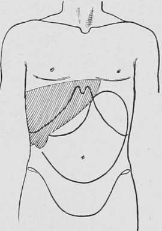

Carcinoma In The Vicinity Of The Biliary Papilla(Cancer Of The Second Portion Of The Duodenum Or Periam- Pullary)
Description
This section is from the book "Cancer And Other Tumours Of The Stomach", by Samuel Fenwick. Also available from Amazon: Cancer and other tumours of the stomach.
Carcinoma In The Vicinity Of The Biliary Papilla(Cancer Of The Second Portion Of The Duodenum Or Periam- Pullary)
In the second part of the duodenum the growth may commence either in the mucous membrane covering the papilla, or at some spot in its vicinity. In the former case the first indication is usually jaundice, while in the latter the signs of pyloric or intestinal obstruction precede those which arise from occlusion of the bile-duct.
Carcinoma of the papilla is usually of the cylinder-celled type, and takes the form of a soft growth, which subsequently ulcerates. As a rule, a yellow tinge of the skin and conjunctivae is the first symptom to attract attention, and it may be several weeks before pain or vomiting develops. In other cases the icterus occurs quite suddenly after an attack of sickness, or its onset may be heralded by repeated chills and intermittent pyrexia. It is worthy of notice that the colouration of the skin is seldom very intense, and that the bronzed or olive tint that accompanies malignant disease of the bile-duct is rarely observed, while not infrequently the jaundice alternately deepens and fades, or appears to be favourably affected by saline aperients. When ulceration occurs, the growth which obstructed the orifice of the duct may be quite destroyed, and the bile may once more find a free exit into the bowel. Under these conditions the icterus either disappears completely or the urine alone continues to give indication of the presence of bile in the circulation.
The course of the disease depends upon the extent of the growth and the development of complications. As a rule, the jaundice continues with varying intensity, and the patient steadily loses flesh and strength. The appetite is often better preserved than in gastric cancer, but there is usually great distaste for fats, and sometimes excessive thirst. The tongue is foul, pain and flatulence are experienced two or three hours after every meal, and constant nausea or eructation of sulphuretted hydrogen is a frequent source of complaint. Vomiting is seldom absent, and at this stage of the disease usually occurs once or twice a day. The ejecta are copious in quantity, and consist of a brownish sour-smelling fluid, which deposits a thick sediment of undigested food, and is usually devoid of free hydrochloric acid. Notwithstanding the presence of jaundice and the absence of bile from the stools, the vomit occasionally exhibits a bright green colour. Haematemesis is comparatively rare, but altered blood is not infrequently observed in the evacuations.
On examination, the epigastrium is found to be slightly distended, and there may be some degree of rigidity of the right rectus muscle. The liver is invariably enlarged, and its lower border extends for an inch or more below the costal margin. Careful palpation will also reveal the presence of a distended gallbladder, in the form of an elongated elastic tumour, which is attached to the under surface of the liver and is capable of slight lateral displacement. At first it is situated near a vertical line drawn from the tip of the ninth rib, but as the liver enlarges it may be pushed several inches to the right. A tumour due to the intestinal growth can seldom he detected, but if the pancreas, retro-peritoneal glands, or the omentum are invaded, a hard nodular and painful mass may be felt in the region of the navel. Dilatation of the stomach is always present, and in many cases the contractions of its hypertrophied walls are visible through the abdominal parietes. Although death usually ensues from inanition at the end of six to eight months, it may occur at a much earlier period from biliary toxaemia or other complications.
Fig. 58.-Diagram illustrating the physical signs of dilatation of the stomach and first part of the duodenum, with enlargement of the liver and gall-bladder.
Continue to:
- prev: Carcinoma Above The Biliary Papilla (Supra-Ampullary Or Parapyloric Cancer)
- Table of Contents
- next: Case XXII